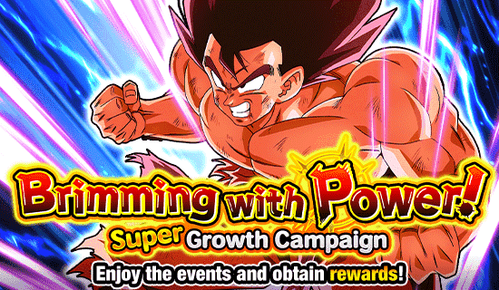
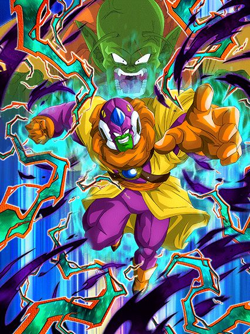
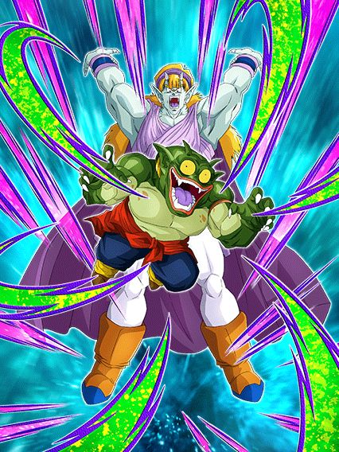
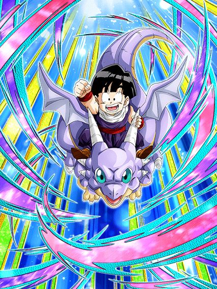
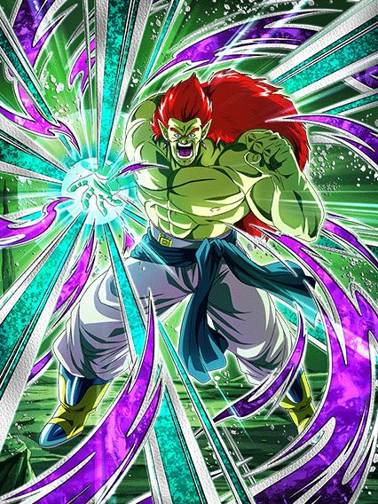

Celebração do Lord Slug

Tecnicamente devia ser a pior celebração do ano 💀
Não tem muito a se fazer por hora, apenas aguardar os cards do Heroes.
^
Lord Slug Dokkan Fest

Quem diria, ele ganhou um Dokkan Fest afinal.
O Slug lidera a nova categoria Demonic Power que NÃO TEM O JANEMBA HAHAHAHA-
Ele é bem restrito a essa categoria, precisando de 4 aliados dela pra ativar a intro dele, mas ele é bem forte com tudo ativo
66% de redução de dano, adicional com 70% de chance de ser SA, builda 200% de ATK e DEF atacando, scouter depois de levar 5 golpes, domínio, bom dano, boa defesa, boa Active Skill com uma boa condição..
Em geral, um personagem forte, bonito e útil, belo buff pra vilões.
Esses caras tinham nomes?

Um suporte útil.
Esses caras tem 50% de chance de desvio, dão 60% de ATK e DEF pra Demonic Power e tem MUITOS adicionais
Eles buildam +20% de chance de desvio depois de atacarem 5 vezes, e isso é bem fácil
Considerando todos que eles tem na passiva, esses caras tem um total de 4 possíveis SAs adicionais, além do adicional do Hidden Potential 💀
Gohanzinho F2P

Acho que um EZA salva ele.
Esse Gohanzinho tem um problema óbvio já estampado na passiva dele que é ter 65% de redução de dano contra 2 ou mais inimigos
Ele já tem um adicional, tem suporte incondicional e debuffa o inimigo, então se a redução de dano tiver uma condição melhor ele certamente será útil.
O EZA do Boujack STR

Eles escolheram o EZA certo pra essa celebração.
Na forma base esse cara é um suporte insano, dando 60% de ATK e DEF pra Space-Traveling Warriors e Inhuman Deeds que pode aumentar pra até 90% se tiverem 3 inimigos ou mais
Caso tenham 5 personagens em uma dessas categorias no time, ele também fica com defesa ativa, o que é decente pra um suporte
Enfim, transforme ele assim que puder.

O Boujack agora stacka 50% de ATK no SA, e caso você pegue 6 orbs, ele vai lançar pelo menos 2 adicionais com 50% de chance de serem Supers
Além disso, ele tem defesa ativa permanente, muda orbs aleatoriamente pra STR e dá MUITO dano enquanto tem uma defesa decente
Junta isso com os links e categorias de vilão dele e você tem um EZA incrível.
Você chegou ao fim dessa página!
Obrigado por ler tudo, e fica a vontade pra ver outras